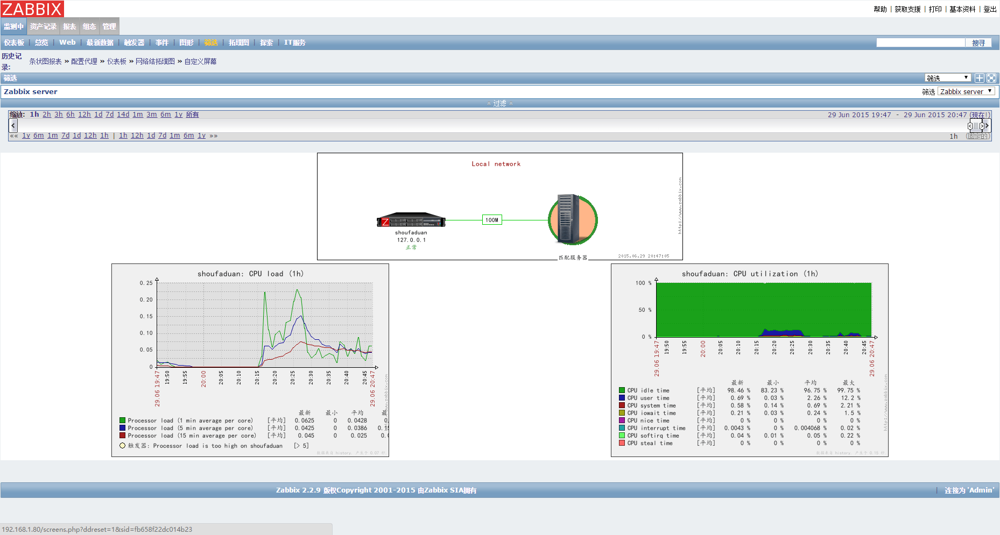
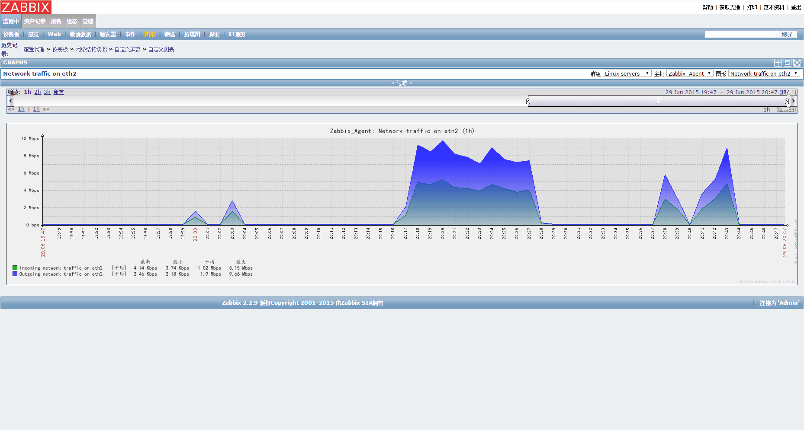

关于zabbix
- zabbix是一个基于WEB界面的提供分布式系统监视以及网络监视功能的企业级的开源解决方案，能监视各种网络参数，保证服务器系统的安全运营；并提供灵活的通知机制以让系统工程师快速定位/解决存在的各种问题。zabbix由2部分构成，zabbix server与可选组件zabbix agent。
- zabbix server可以通过SNMP，zabbix agent，ping，端口监视等方法提供对远程服务器/网络状态的监视，数据收集等功能。
- zabbix agent需要安装在被监视的目标服务器上，它主要完成对硬件信息或与操作系统有关的内存，CPU等信息的收集。

准备内容
- LNMP/LNAP环境安装
- zabbix安装包（官网版本：zabbix-2.2.9.tar.gz）
- zabbix安装脚本
- zabbix清空历史监控数据脚本
安装步骤
- PHP参数配置
为安装zabbix监控WebUI，需要预先配置phpvim /usr/local/php/etc/php.ini查找配置下列参数：123456memory_limit = 128Mpost_max_size = 50Mupload_max_filesize =50Mmax_execution_time = 600max_input_time = 600date.timezone = Asia/Shanghai
修改后执行service php-fpm restart
- 修改zabbix_server程序的磁盘路径
修改zabbix_server主程序路径12# vim /usr/local/zabbix/misc/init.d/tru64/zabbix_serverDAEMON=/usr/local/zabbix/sbin/zabbix_server
添加下面两句到#!/bin/bash之后，解决service myservicedoes not support chkconfig问题12# chkconfig: 2345 10 90 # description:zabbix....
- 编辑zabbix_server配置文件
vim /usr/local/zabbix/etc/zabbix_server.conf12345DBHost=localhostDBName = zabbixDBPassword =zabbixDBUser = zabbixLogFile=/tmp/zabbix_server.log
- 添加zabbix服务Service端口（不能重复操作）
|
|
Mysql中新建Zabbix数据库
123456789101112131415161718192021222324252627282930313233mysql -uroot -prootcreate database zabbix;grant all privileges on zabbix.* to zabbix@localhost identified by 'zabbix';quit```6. 执行安装脚本``` bashcd /usr/local/zabbixchmod +x configurecd /usr/local/zabbix/scriptchmod +x install-zabbix_server.shsudo ./install-zabbix_server.sh```# 相关操作1. zabbix网站中的启用中文后乱码问题* 在zabbix网站目录下的include/locales.inc.php文件中启用中文（'display'=true）* 在windows下控制面板->字体->选择一种中文字库例如“楷体”，把它拷贝到zabbix的web端的fonts目录下例如：/var/www/html/zabbix/fonts，并且把TTF后缀改为ttf* 修改zabbix的web端/include/defines.inc.php，如下``` php//define('ZBX_GRAPH_FONT_NAME', 'DejaVuSans'); // origin namedefine('ZBX_GRAPH_FONT_NAME', 'simkai'); // custom font name```2. 若zabbix的host无法访问，考虑防火墙是否需要关闭/加入信任端口``` bash#查看防火墙状态service iptables status#关闭防火墙service iptables stop#永久关闭防火墙chkconfig iptables off编译问题
‘aclocal-1.14’ is missing on your system.You should only need it if you modified ‘acinclude.m4’ or ‘configure.ac’ or m4 files included by ‘configure.ac’.
解决方法12touch configure.ac aclocal.m4 configure Makefile.am Makefile.inmake查看zabbix服务是否已启动
123456netstat -utlnp | grep zabbix```5. 配置文件更新后，需重启客户端服务``` bashservice zabbix_server restartzabbix web配置简略，贴几张效果图

